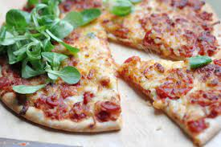

Pizza

Description
delicious homemade and easy cheese pizza
Ingredients
- 2.5 cups flour
- 1 teaspoon salt
- 1 teaspoon sugar
- 1 tablespoon fast rise yeast
- 1 cup water (120°F)
- 1 tablespoon oil
Topping
- 0.25 cup tomato sauce
- 1 teaspoon Italian seasoning
- 0.5 teaspoon garlic powder
- 0.5 teaspoon salt
- 0.125 teaspoon pepper
- 1 cup shredded mozzarella cheese
- 1 cup shredded monterey jack cheese
- 3 tablespoons grated parmesan cheese
Instructions
- In large bowl, mix first 4 ingredients.
- Mix water and oil; add to flour mixture.
- Turn onto floured surface; knead for 2 minutes.
- Place in a greased bowl; turning to grease top.
- Cover and let rise for 20 minutes.
- Punch down; place on 12in, greased pizza pan.
- Pat into a circle.
- Topping: Mix first 5 ingredients and spread over crust.
- Sprinkle with the mozzeralla; the monterey jack, and the parmesan.
- Bake at 400* for 20 minutes or until light brown.